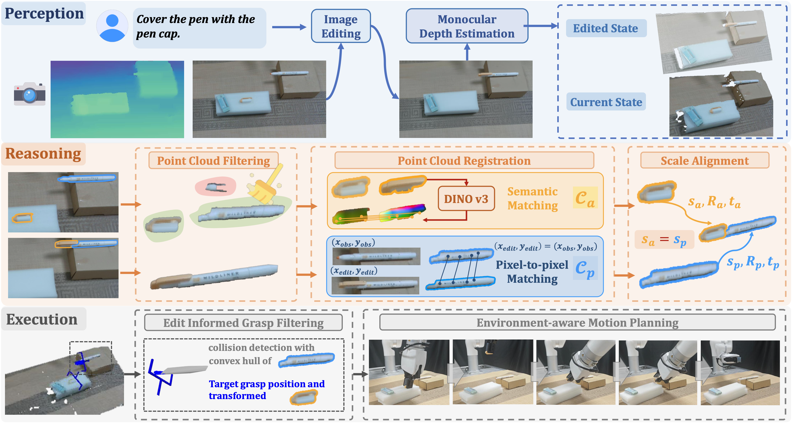

Human-like generalization in open-world remains a fundamental challenge for robotic manipulation. Existing learning-based methods, including reinforcement learning, imitation learning, and vision-language-action models (VLAs), often struggle with novel tasks and unseen environments. Another promising direction is to explore generalizable representations that capture fine-grained spatial and geometric relations for open-world manipulation. While large-language-models (LLMs) and vision-language-models (VLMs) provide strong semantic reasoning based on language or annotated 2D representations, their limited 3D awareness restricts their applicability to fine-grained manipulation.
Given a monocular RGB-D observation and a language instruction, an image-editing model generates the target post-manipulation state, depicting where and how objects should be rearranged.
Both the current and edited images are lifted into pixel-aligned 3D point clouds using monocular depth estimation, with mask-based cropping to preserve spatial detail.
A robust registration pipeline with point cloud filtering, semantic matching via DINOv3 features, and scale alignment extracts precise 6-DoF inter-object transformations.
The extracted transformation is converted into target poses with edit-informed grasp filtering and heuristic primitive-based motion planning for robust robotic execution.
Given an RGB-D observation and a language instruction, LAMP uses image-editing to generate the target state, then lifts 2D spatial cues into 3D inter-object transformations through cross-state point cloud registration for execution.

Figure 1: Overview of LAMP. The image-editing model generates an edited state from the current observation and language instruction. Cross-state point cloud registration extracts the inter-object 3D transformation, which is converted into target poses for robotic execution.
We evaluate LAMP on 13 real-world manipulation tasks spanning insertion, covering, assembly, stacking, articulated manipulation, and more. LAMP significantly outperforms prior methods across all task categories.
LAMP recovers precise 6-DoF inter-object transformations for high-precision tasks — insertion, covering, stacking, and assembly — where millimeter-level accuracy is essential.
Different language instructions yield different manipulation behaviors on the same scene — the edited image prior faithfully reflects the semantic intent, guiding distinct 3D transformations.
For articulated objects like drawers and toasters, LAMP treats the static housing as the passive object and extracts the transformation of the movable part from edited images.
LAMP chains multiple sub-tasks sequentially — each step conditions on the outcome of the previous one, demonstrating coherent multi-step planning and execution.